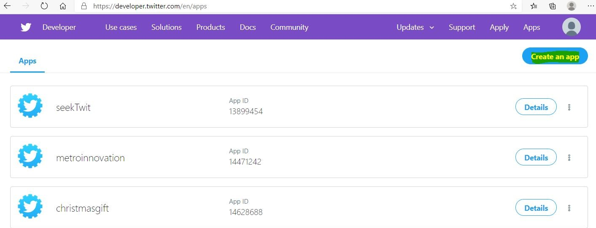
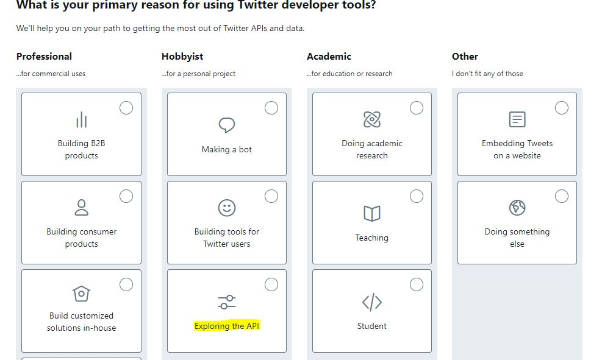
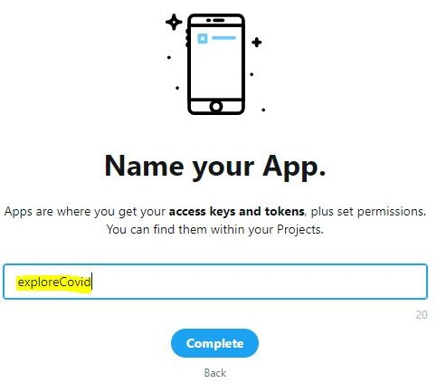
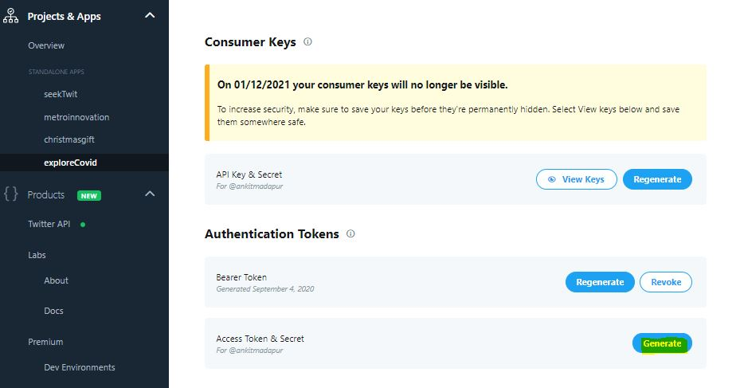
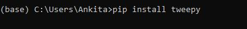
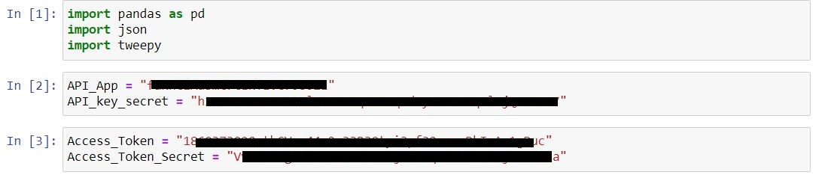
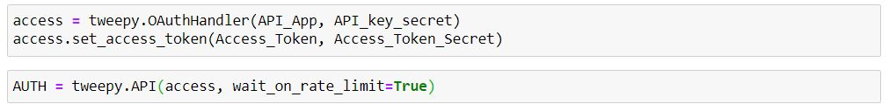
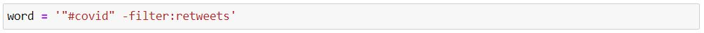
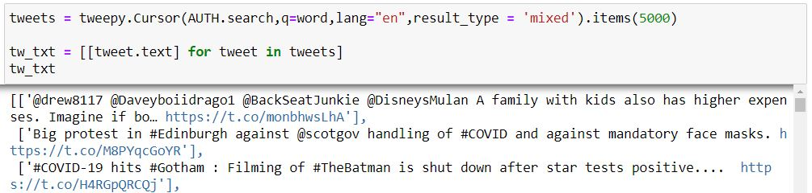
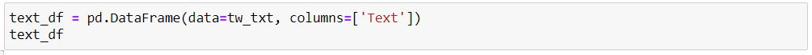

Twitter is a popular microblogging platform. It is faster to get latest news and update. Lets see how we can extract data from twitter public accounts.
Step 1:
Creating twitter profile,
If you do not have existing Twitter account then create a new account from twitter page. After successful creation follow the below steps
1] Go to Twitter App Page
2] Click on "Create a New App". I already have existing 3 apps created so i will create a new one for this project.

3] Select the reason for creating a App. I am selecting under Hobbyist -> Exploring the API -> Click "Next"

4] Enter country and name of the app/project. I am naming it as "ExploringCOVID" -> Click "Next"

5] Answer all the "How will you use the Twitter API or Twitter data?" -> click "Next" -> Click "Submit Application"
6] Now Lets create a App. Click on "+ Create App"
7] Enter name and you will see the token keys.

8] Go to Dashboard and now we will generate access token.

9] Save the access token in a text file or take a screenshot for future use.
10] To extract data we need a Tweepy python library. You can install this library by downloading from here Tweepy
or use python terminal to install as below

11] Now we have all the required access and installations. We will use the access tokens to authenticate and to extract required data.
Step 2:
12] I am using Jupyter Notebook to write queries. Import the libraries and add API tokens and secret keys. (This can be found under keys and tokens in your twitter app account)

13] Now we need to pass the created API token for twitter access. The secret tokens will get expired after multiple use. You can regenerate the tokens from twitter account.

14] Now we are ready and lets pull #COVID tweets from twitter. You can ignore the retweeks by using filter.

15] I will be picking only the text of the tweet as i don't need other values for my analysis. Refer this for value defination.

16] The output is in list format so Let's beautify by converting into dataframe. This can be used to save the data in a text or excel format if needed.

Now we have data for further analysis!!
This method can be used to create a dataset for any social tweets as per out requirements instead of searching for a dataset only. In conculsion extracting data from social platforms is much easier and faster.